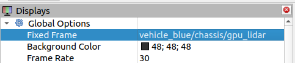
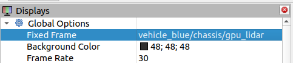

IoT Lab Lecture 9 - 10/05/2023
Adding a lidar sensor to a Gazebo robot
Let's go back to the robot we made in Lecture 5.
You can find the file for the vehicle world here: vehicle_blue_world.sdf
 What if instead of simply moving our robot, we would want it to scan the area around? So that it can move in a "smart" way,
and avoid obstacles?
What if instead of simply moving our robot, we would want it to scan the area around? So that it can move in a "smart" way,
and avoid obstacles?
To do that, we can add a <sensor> tag to our robot.
By using this tag, we will add a "light detection and ranging" (lidar) sensor to our robot.
First of all, let's add a wall to our world, so that we can test the functionality of the sensor later on.
Use this code alongside your vehicle model:
<model name='wall'>
<static>true</static>
<pose>5 0 0 0 0 0</pose><!--pose relative to the world-->
<link name='box'>
<pose/>
<visual name='visual'>
<geometry>
<box>
<size>0.5 10.0 2.0</size>
</box>
</geometry>
<!--let's add color to our link-->
<material>
<ambient>0.0 0.0 1.0 1</ambient>
<diffuse>0.0 0.0 1.0 1</diffuse>
<specular>0.0 0.0 1.0 1</specular>
</material>
</visual>
<collision name='collision'>
<geometry>
<box>
<size>0.5 10.0 2.0</size>
</box>
</geometry>
</collision>
</link>
</model>
Now, under the <world> tag, add these three plugins, which will be necessary for the lidar scanner to work:
<plugin
filename="ignition-gazebo-physics-system"
name="ignition::gazebo::systems::Physics">
</plugin>
<plugin
filename="ignition-gazebo-scene-broadcaster-system"
name="ignition::gazebo::systems::SceneBroadcaster">
</plugin>
<plugin filename="ignition-gazebo-sensors-system"
name="ignition::gazebo::systems::Sensors">
<render_engine>ogre2</render_engine>
</plugin>
Once you've done that, we're going first to add a frame for our lidar scanner. This should go above your chassis link.
<frame name="lidar_frame" attached_to='chassis'>
<pose>0.8 0 0.5 0 0 0</pose>
</frame>
And this, inside of the chassis link.
<sensor name='gpu_lidar' type='gpu_lidar'>
<pose relative_to='lidar_frame'>0 0 0 0 0 0</pose>
<topic>lidar</topic>
<update_rate>10</update_rate>
<ray>
<scan>
<horizontal>
<samples>640</samples>
<resolution>1</resolution>
<min_angle>-1.396263</min_angle>
<max_angle>1.396263</max_angle>
</horizontal>
<vertical>
<samples>1</samples>
<resolution>0.01</resolution>
<min_angle>0</min_angle>
<max_angle>0</max_angle>
</vertical>
</scan>
<range>
<min>0.08</min>
<max>10.0</max>
<resolution>0.01</resolution>
</range>
</ray>
<always_on>1</always_on>
<visualize>true</visualize>
</sensor>
That'it! If you start your simulation again you should have a Gazebo topic called /lidar which publishes the data of the lidar scanner.The edited file for the Gazebo world is the following: vehicle_blue_lidar.sdf
Using the lidar to scan an area
One cool thing about lidar scanner is that they can be used to create a 3d map of the environment around our robot. This information, combined with ROS coding, allows you to create
"smart" robots which can navigate complex areas with multiple obstacles.
This won't be needed for the rest of the course, but if you want to see the information being captured live by your scanner, we can use a tool which comes with ROS called
rviz2. Just simply type the name of the application on a new sourced terminal, and you should be prompted with a view like this:
 To view our information collected thanks to our lidar scanner, we first have to bridge that topic to ROS.
To view our information collected thanks to our lidar scanner, we first have to bridge that topic to ROS.
ros2 run ros_gz_bridge parameter_bridge /lidar@sensor_msgs/msg/LaserScan@ignition.msgs.LaserScan
After that. We can add the /lidar topic to our Rviz applcation.Just click the Add button on the bottom left corner, then go to the "By topic" tab and add the /lidar topic.
 After that, all we need to do is to fix our frame of reference to our lidar sensor, and that will do the trick. Our frame needs to point to our lidar scanner, like this:

Some red dots should start appearing on your screen. They are the points that the lidar scanner is currently hitting in the simulated environment.
After that, all we need to do is to fix our frame of reference to our lidar sensor, and that will do the trick. Our frame needs to point to our lidar scanner, like this:

Some red dots should start appearing on your screen. They are the points that the lidar scanner is currently hitting in the simulated environment.

If you want to go more into details on how you can map your enviornment, you may want to look on how to define a fixed frame in your simulation, so that the information of the rays can be stored with respect to the fixed frame, thus creating a 3D map of the scanned area.
We're only interested in collecting data to account for simple collisions at this point, so that won't be a requirement.
Let's now try to use the data collected by the lidar scanner to prevent the robot from hitting the wall.
Extra Exercise - Don't hit the wall!
You are here requested to modify the code of the previous exercise as follows: the vehicle must now move towards the wall, and stop when it gets too close.
The lidar scanner sends multiple rays in front of him to detect for an incoming collision. You can read the ranges of all those rays by reading the values of
.ranges inside of a LaserScan message.

Solution not discussed in class yet.
Will be available here later this week.
Project Brainstorming: Fair vs Unfair Task
You are given two simulation instances for you to test your project solution.
The two simulation are exactly the same, except for one single value: the weight given to the fairness.
With that said, how would you approach this instance? Note that some targets are really far away from each other, you may not be able to monitor
everything with only the two drones given.
In one instance though, being fair is going to give you a considerate reward.
Is it still worth it to completely forget about that far away target?
Pull the Project repository to get these new instances!
Conclusions
This concludes our first project lecture!
All the simulation files used in the brainstorming part have been published in the Git repository of the project. Pull the new version, and you will also have the score calculation
ready for you!
Wind is also now implemented in your simulation, feel free to play with it in your own instances!
That will be the main focus of our next brainstorming session!
See you soon!